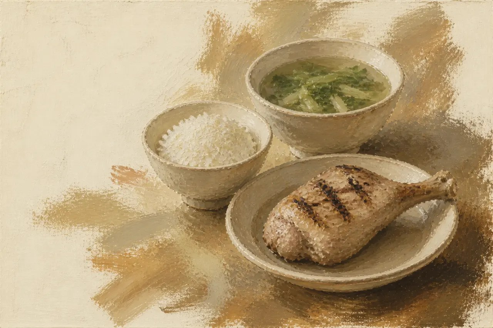

Plates match-cut every ~0.5 s on the beat (phở, chicken and rice, bolognese, braised pork, a shake…), each aligned so the main plate lands in the same place. The line stays locked while the world changes; words add one per ~2 s. Cuts accelerate into the stop.
Sound: A pulse that speeds up; each cut on the kick.
From: Claude Opus 5.5 (a locked line over ~35 match cuts) · Claude Fable 5 (cuts accelerating to 0.12 s).